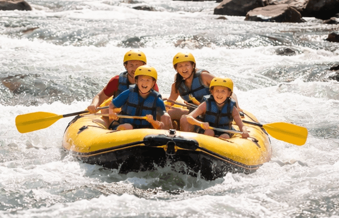
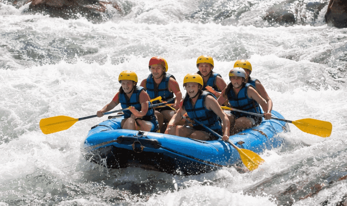
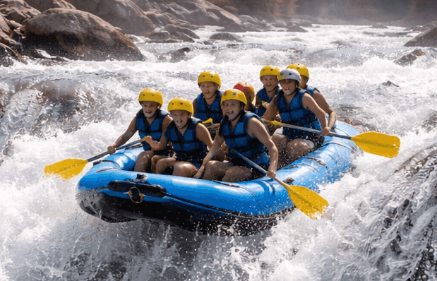

Family Float
This beginner-friendly trip is perfect for families and first time rafters. Enjoy a scenic ride through calm waters with light rapids and beautiful views along the river. Prepare to see Salmon!

Contact us today to reserve your spot on one of our exciting rafting trips.
Contact Us
This beginner-friendly trip is perfect for families and first time rafters. Enjoy a scenic ride through calm waters with light rapids and beautiful views along the river. Prepare to see Salmon!

The Adventure Run offers more excitement with moderate rapids, fast moving water, and plenty of action. It is a great choice for guests looking for a balance of fun and challenge. Book now!

Our most thrilling trip is designed for experienced adventurers who want a full white water challenge. Expect powerful rapids, fast currents, and an unforgettable ride. We have a leaderboard!
| Trip | Difficulty | Length | Price |
|---|---|---|---|
| Family Float | Easy | 2 Hours | $45 |
| Adventure Run | Moderate | 4 Hours | $75 |
| Extreme Rapids | Advanced | 6 Hours | $110 |